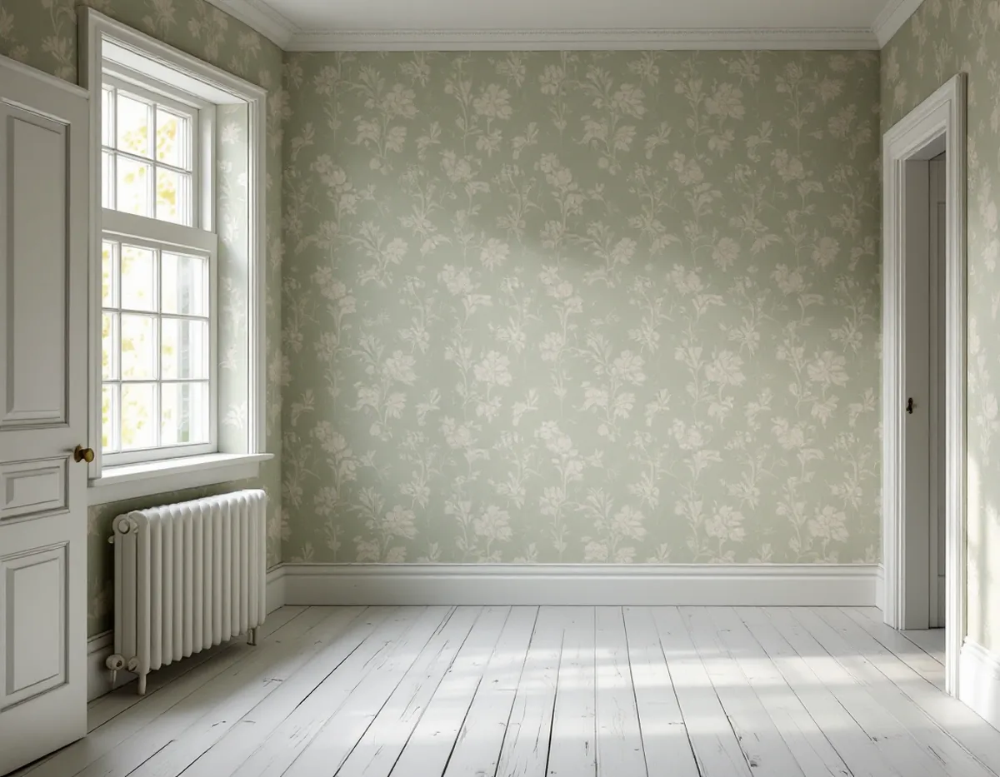
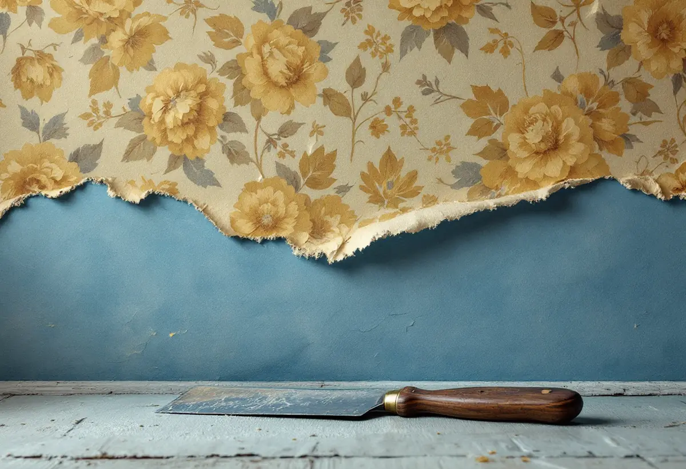

Platsbesök
Vi lyfter en kant, räknar lagren och ser vad det understa sitter på.

När en äldre villa i Tungelsta, Vendelsö eller Dalarö ska få ny tapet sitter det ofta flera generationer av väggbeklädnad under den nuvarande.
Beskriv jobbet kort.
Något blev fel. Kontrollera uppgifterna eller ring 08 12 410 276.
Vi tittar på jobbet på plats innan du får offert.
Du ser vad som ingår och vad det kostar.
Vi drar av ROT direkt och sköter ansökan.
Geal Entreprenad AB, Bromma. Org.nr 559303-7566.

Det understa lagret kan berätta när rummet först inreddes. Geal Entreprenad AB tapetserar i villor, radhus och bostadsrätter i Haninge och tittar på lagren tillsammans med dig innan något rivs.
Kommunens skrift Haninges karaktärsmiljöer beskriver hur småhusbebyggelsen främst växte fram längs Nynäsbanan, som invigdes 1901. De äldre villorna ligger ofta nära stationerna och har fått sällskap av hus från hela 1900-talet. Egnahemsområdena från 1910- till 1940-talet finns bland annat i Tungelsta, Vendelsö, Vendelsömalm, Handen, Västerhaninge och Norrby, och de första villorna där har drag av jugend och nationalromantik, som senare övergår i nyklassicism och tidig funkis.
Sommarbostäderna har en ännu längre historia i kommunen, från 1850-talet fram till senare delen av 1900-talet. Skriften lyfter särskilt Dalarös sommarnöjen och Årsta havsbads sportstugor. Sommarnöjena i Dalarö och Smådalarö är stora villor i trä med glasverandor och snickarglädje, och sommarvillorna uppfördes i stor utsträckning under andra hälften av 1800-talet och början av 1900-talet. Villorna från 1960-talet och framåt är oftast grupphus, till exempel i Jordbro och Brandbergen.
Ett hus från någon av de äldre perioderna kan ha fått nya väggar flera gånger. Därför börjar vi med att ta reda på vad som faktiskt sitter där.
Svenska Byggnadsvårdsföreningens frågespalt har många exempel på hur tapeter dateras. I ett hus satt underst en blå tapet som föreningen bedömde vara från ungefär 1860–1880. När ultramarinblått kunde framställas syntetiskt blev det billigt, och blå tapeter fick ett stort genomslag. Tapeten ovanpå var från 1900–1920, alltså jugendperioden. Föreningen skriver också att man oftast tapetserade på lerklining eller tidningspapper, och att pappspända väggar var vanliga.
I ett annat svar daterades en tapet närmast lerkliningen till omkring 1870. Mönstertypen fanns som papperstapet från omkring 1860, och tapeten såg valstryckt ut eftersom den röda färgen blödde in i den blå. En valstryckt tapet från 1910–20-talet kunde i stället ha en flödig färg som gav en vattenfärgseffekt, där en av mönsterfärgerna såg ut att vara det infärgade bottenpapperet som sparats ut.
Ibland är lagren många. I ett hus fanns nio lager, där det nedersta satt direkt på lerputsen och resten på en kartong som spikats upp. Svaret, som skrevs av en tapettillverkare, daterade den understa tapeten till 1880–90-talet: en enkel tapet, valstryckt i maskin med två färger på en omålad pappersbotten. Papperet var mycket troligt av infärgad pappersmassa, men sådana färger bleks snabbt och kvar är det gulnade råpapperet.
Alla lager behöver inte rivas. I en fråga om ett 30-talshus med många lager tapet på tretexskivor hade ägaren använt lagningsgips i ett rum för att bevara eventuella ursprungstapeter. Byggnadsvårdsföreningens antikvarie tyckte att det var en bra idé, eftersom någon i framtiden då kan botanisera bland vår tids tapetlager. Isoleringen blir dessutom lite bättre med tapeter och tretexskivor kvar.
Vill du veta mer om ett fragment kan det vara värt att fråga någon med specialkunskap. Föreningen rekommenderar normalt inga företag i sin frågespalt, men gjorde ett undantag när frågan gällde gamla tapetfragment och hänvisade till företag med specialkunskap om historiska miljöer.
Vårt förslag är att vi tar en bit av varje intressant lager innan underarbetet börjar, och att du får spara den tillsammans med en notering om rummet. Gäller frågan även färgen på fasaden finns mer under målare i Haninge.
Vi lyfter en kant där det syns minst, till exempel bakom ett element eller en dörr, och räknar lagren. Vi ser om det understa sitter på papp, kartong, puts, lerklining eller skivor och om lagren sitter fast mot varandra. Är de lösa på stora ytor tas de ner, sitter de fast kan de bli underlag för den nya tapeten.
Därefter går vi igenom med dig vad som ska sparas, vad som tas ner och vilket underlag den nya tapeten får. Det står som egna poster i kostnadsförslaget.
Vi lyfter en kant, räknar lagren och ser vad det understa sitter på.
Du väljer om något lager ska sitta kvar eller sparas som en bit.
Nedtagning, underlag och uppsättning redovisas var för sig.
Lösa lager tas ner och väggen lagas och förlimmas där det behövs.
Tapeten sätts upp våd för våd med passning av mönstret.
Vi går igenom rummet med dig och lämnar överbliven tapet för lagningar.
Skatteverket räknar tapetsering som rotarbete. I ett småhus ska arbetet göras i bostaden som du äger, och i en bostadsrätt innanför bostadens tak, väggar och golv.
Företaget får dra av högst 30 procent av arbetskostnaden. Rotavdraget kan bli högst 50 000 kr per person och år, och högst 75 000 kr om rutavdrag räknas in. Tapet, papp, klister och resor ger inget avdrag. Geal drar avdraget direkt på fakturan.
Hur många lager som ska ner, om något ska sparas och vilket underlag väggen behöver påverkar mest. Efter ett gratis platsbesök får du ett skriftligt kostnadsförslag.
Fasad, fönster och invändig målning.
Målare i Stockholm →Takbyte, takbesiktning och plåtarbeten.
Takläggare i Haninge →Dalarö, Vendelsö och Brandbergen.
Takrenovering i Haninge →Skjutfält, kulturmiljö och skärgårdstomter.
Attefallshus i Haninge →Vakuumtoalett, sluten tank och öarna.
Badrumsrenovering i Haninge →Nytt hus och tillbyggnad i omvandlingsområden.
Byggföretag i Haninge →Mustiga 50-tal och pastell.
Fasadmålning i Haninge →Tegelvillor, grupphus och panelade gårdar.
Fasadrenovering i Haninge →Sportstugor och fönster i skärgårdsväder.
Fönsterbyte i Haninge →Gårdens fönster, från boningshus till ladugård.
Fönsterrenovering i Haninge →Egnahem, sportstugor och hus i sluttning.
Golvläggare i Haninge →Laga och slipa trägolvet i villan.
Golvslipning i Haninge →Egnahem, grupphus och Dalarö.
Köksrenovering i Haninge →Falsad plåt, sjöbodar och beslag i Haninge.
Plåtslagare i Haninge →Verandor, altaner och skärmtak.
Snickare i Haninge →Kontrollplan och riskbedömning vid takbyte.
Takbyte i Haninge →Egnahem, grupphus och sommarvillor i Haninge.
Målare i Haninge →Lov, situationsplan och kontrollplan.
Tillbyggnad i Haninge →Folkhemsvillan inifrån.
Totalrenovering i Haninge →Eller ring 08 12 410 276, mån–fre 08–17.
Beskriv jobbet kort.
Något blev fel. Kontrollera uppgifterna eller ring 08 12 410 276.